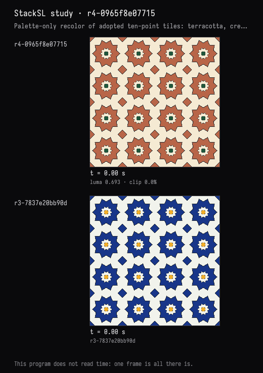

Recolour, and prove the geometry held
The recorded exchange: the request, the tool activity, every image the tools returned to the model, and its reply. Expand tool activity to read the steps; open an image to see it full size.
- Adopted variant 10 points in the study card →
r3-7837e20bb90d“adopt variant 10 points: 10 points; same colors, spacing and outer radius.”
I took ten points in the card. Now recolour it in terracotta, cream and a deep green instead of cobalt and saffron — but don't change the geometry at all, and prove that you didn't.
Tool activity · 2 steps
Starting AI conversation
Waiting for model
I’ll change only the color literals: cobalt to terracotta, ivory to cream, and saffron to deep green. Then I’ll compare the geometry fields before and after to verify they are identical.
Tool activity · 5 steps
InspectStackSLStudy finished (1 ms)
SetStackSLNumbers finished (1165 ms)
RunToolProgramRequest finished (5986 ms)
- ✓
CompareStackSLStudy{"beforeRevision":"r3-7837e20bb90d","afterRevision":"r4-0965f8e07715","beforeSta— 1699 ms - ✓
CompareStackSLStudy{"beforeRevision":"r3-7837e20bb90d","afterRevision":"r4-0965f8e07715","beforeSta— 1444 ms - ✓
CompareStackSLStudy{"beforeRevision":"r3-7837e20bb90d","afterRevision":"r4-0965f8e07715","beforeSta— 832 ms - ✓
CompareStackSLStudy{"beforeRevision":"r3-7837e20bb90d","afterRevision":"r4-0965f8e07715","beforeSta— 861 ms - ✓
CompareStackSLStudy{"beforeRevision":"r3-7837e20bb90d","afterRevision":"r4-0965f8e07715","beforeSta— 921 ms
program ok: 5 call(s), 0 failed, 5985 ms
- ✓
Waiting for model
Completed

Recolored your ten-point design: - Terracotta rosettes and diamonds - Cream ground and inset stars - Deep green centers - Original dark grout retained
Geometry proof: only 15 RGB channel values changed—no coordinates, shape formulas, thresholds, spacing, or grout widths.
Compared the adopted version (r3) against the recolor (r4):
| Geometry field | Maximum difference |
|---|---|
| Tile coordinates | 0 |
| Ten-point star field | 0 |
| Outer edge | 0 |
| Center octagon | 0 |
| Corner diamonds | 0 |
Each comparison covered 36,864 sampled pixels, with zero changed samples. Compilation passed, and I visually checked the recolored preview.